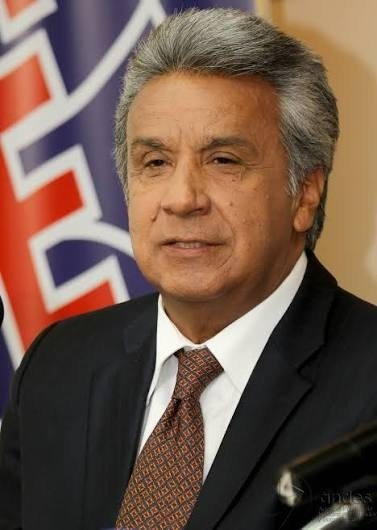
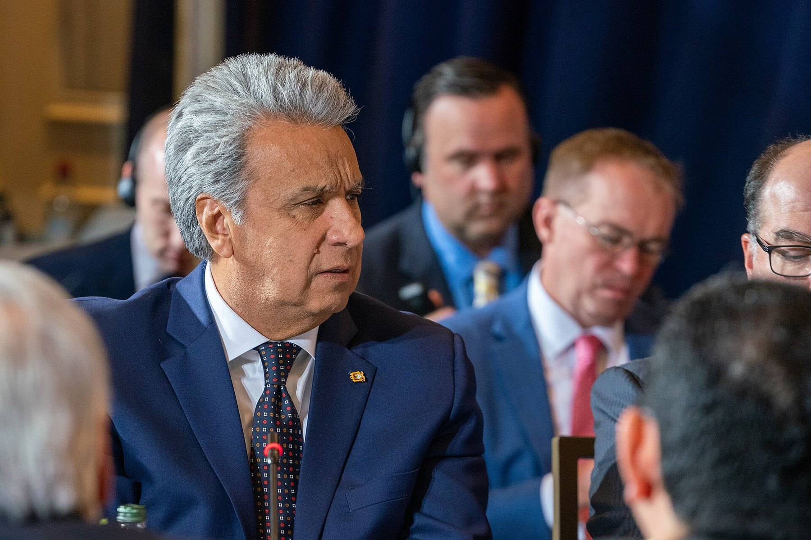
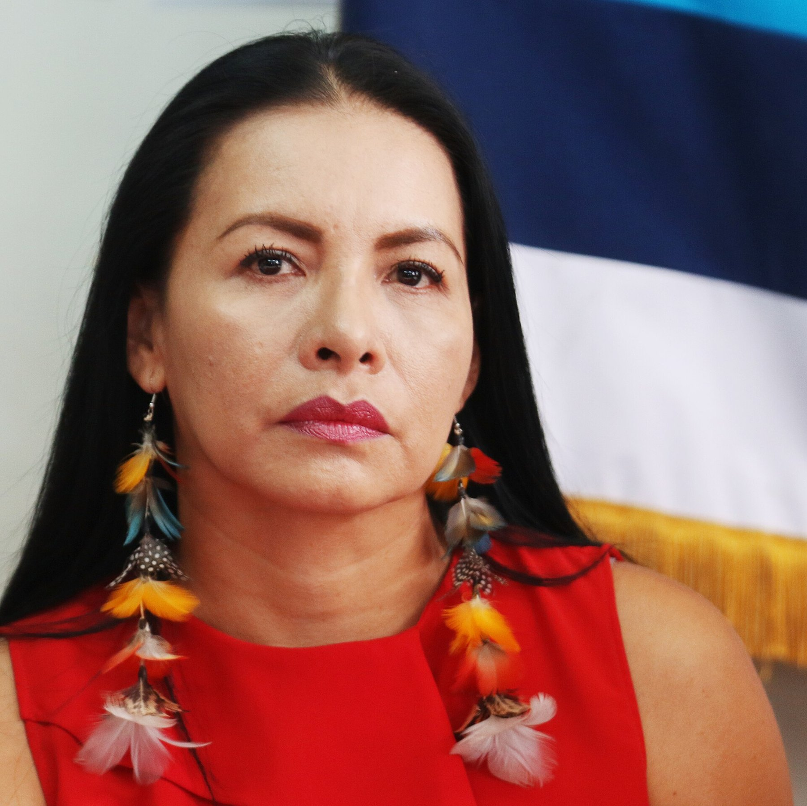
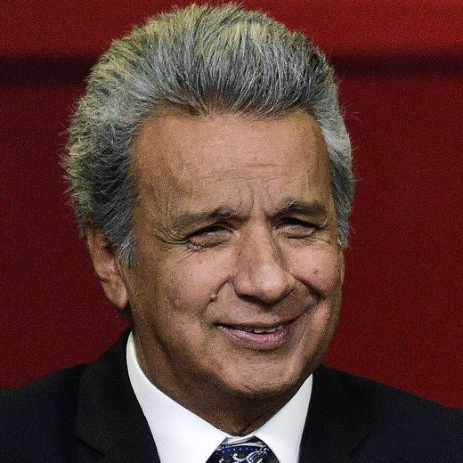
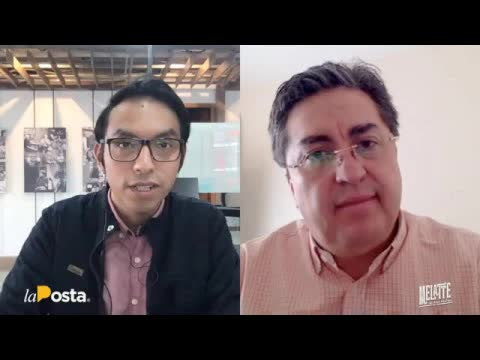
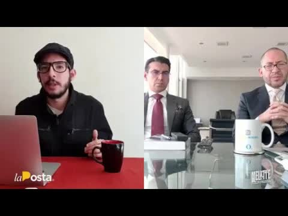
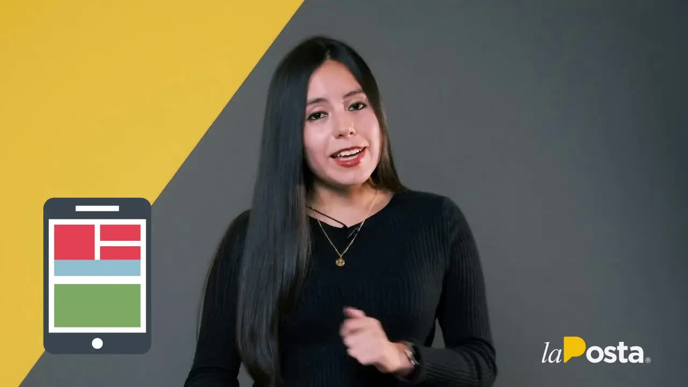

La consulta contra la corrupción, pagada con corrupción
Lenín Moreno llegó a la Presidencia en mayo de 2017 como heredero de Rafael Correa y a los pocos meses rompió con él. La consulta popular del 4 de febrero de 2018 fue su herramienta: siete preguntas, entre ellas la muerte civil para condenados por corrupción, el fin de la reelección indefinida y la reestructuración del Consejo de Participación Ciudadana. La campaña por el Sí se presentó como la cruzada contra la corrupción del correísmo. Ganó todas las preguntas.


El 14 de junio de 2020, en plena pandemia, La Posta publicó un reportaje de siete minutos. Una fuente del antiguo círculo cercano del presidente, tras meses de seguimiento, había entregado archivos y correos sobre el financiamiento de esa campaña. El primer correo es del 19 de diciembre de 2017, a las 3 y 54 de la tarde: el consultor político Luis Valdebenito envía un documento llamado Plan Logístico Ozil, bajo el asunto Presupuesto logística, a Jorge Wated y a Patricio Beltrán, el financiero de Alianza País. Wated era entonces director del Secob, la empresa de obras públicas, y en 2020 presidía el directorio del Seguro Social. La Posta dejó toda la documentación a disposición de las autoridades de control.
La consulta popular contra la corrupción se financió de forma corrupta.
La Posta, 14 de junio de 2020
El presupuesto general de gerencia
Los archivos eran una contabilidad paralela, parecida a la del caso Arroz Verde que había destapado los aportes de empresas privadas a las campañas de Correa. De ahí el nombre. La diferencia era peor: esta vez los aportantes no eran empresarios privados sino gerentes de compañías públicas, que manejan dinero de todos, para la campaña del partido de Moreno y de su entonces vicepresidenta, María Alejandra Vicuña, procesada después por corrupción. El documento se llamaba Presupuesto general de gerencia logística de campaña y detallaba equipos, sueldos e insumos.
En qué se gastó
Un archivo, el presupuesto de insumos: casi un millón en camisetas y banderas, medio millón en globos, folletos y afiches, otro medio millón en góndolas y publicidad en buses, y un equipo con sueldo: administradores de bodega, asistentes, mensajeros, doce operadores de distribución y un contador. Otro archivo, el gasto total: 1,4 millones en control electoral, 1,5 millones en brigadas, 300.000 en movilización, 200.000 en imprevistos, 100.000 en acción política, 30.000 en avanzada. Son 3,53 millones, más el millón y medio restante en efectivo: al menos cinco millones.
Doce empresas públicas
De dónde salió la plata. Según la contabilidad, de Flopec, la flota petrolera; Cear, la empresa de los centros de alto rendimiento; Enami, la minera; Ecuador Estratégico; Astinave, los astilleros de la Armada; Petroecuador y Petroamazonas; Fabrec; Correos del Ecuador; CNT; Celec; y el programa Casa para Todos, que no hace casas pero mueve dinero. Unos aportaron 4.000 dólares, como el Cear; otros 100.000, como Ecuador Estratégico; Petroecuador, un millón. Entre las empresas públicas se recaudaron al menos 2,3 millones, más un millón y algo anotado como cortesía de Celec. Correos aparece con un canje de 100.000 dólares por el courier de la campaña. A CNT le pidieron las comunicaciones y los teléfonos.
Quién puso la plata

Los nombres son los de Carondelet. Jorge Wated coordinaba a las empresas que aportaban. Gustavo Baroja, alto dirigente de Alianza País, aparece recibiendo un millón de dólares en efectivo de Petroecuador para logística. Hay entregas en efectivo a David Tellez, funcionario del Ministerio del Interior, y a Ricardo Rhon, funcionario cercano a Wated desde la Corporación Financiera Nacional. Y Eduardo Mangas, la mano derecha de Moreno en su primer año, caído en desgracia tras la filtración de un audio. Diana Atamaint, presidenta del Consejo Nacional Electoral, no había presentado el informe concluyente de gastos y el plazo legal de dos años ya había vencido. El 25 de mayo de 2018 el partido entregó su liquidación oficial: ni medio millón, según voces al interior del CNE.
Que el tema se haya dejado morir en el CNE no implica que la justicia no pueda y deba hacer lo suyo.
La Posta, 14 de junio de 2020
Cómo terminó
El 16 de junio La Posta amplió el caso en su programa con César Montúfar y Fabricio Villamar; el 19 con Marcelo Simbaña, asambleísta de CREO que llevó el tema a la Asamblea y pidió un examen de Contraloría, información al CNE y al SRI y una investigación en el Consejo de Participación; y el 23 con los abogados de Mónica Castillo, la exgerente del Cear que confirmó ante la Fiscalía lo publicado. Castillo declaró que la hoja con empresas, gerentes y montos que mostró La Posta fue la que le presentaron en la reunión del 4 de enero de 2018, a la que llegó en un vehículo oficial con salvoconducto porque creía que era una reunión de trabajo, y que los 4.000 dólares en 100.000 afiches que le pidieron los pagó de su bolsillo. Otros cinco gerentes habían declarado no saber nada. Su defensa denunció que funcionarios en servicio la llamaron para preguntarle qué diría. Ese 23 de junio de 2020 los once miembros de la Comisión de Fiscalización aprobaron por unanimidad un cronograma para investigar el uso de fondos de empresas estatales en la campaña del Sí. Le pusieron el nombre de La Posta: Arroz Moreno. Convocaron a las doce empresas entre el 26 de junio y el 1 de julio; a Baroja, Tellez, Rhon y Mangas el 3 de julio; a Atamaint el 6. Pidieron información a Contraloría, Fiscalía, CNE y SRI. El 8 de julio la revisión de los reportes al CNE ratificó que lo declarado no alcanzaba a cubrir lo gastado.
Ahí se detuvo. Boscán lo comparó en el programa: a las cuatro horas de publicado Arroz Verde había un detenido y a las dos semanas un cooperador eficaz; a los diez días de Arroz Moreno solo había versiones. La investigación legislativa no produjo un informe con consecuencias y la Fiscalía nunca anunció procesados por este caso. En diciembre de 2020 La Posta hizo el balance de las promesas del Gobierno: de los 90 millones que debía recuperar la lucha anticorrupción, se habían recuperado 3,9, y los casos que tocaban al Gobierno, como INA Papers, quedaron fuera. Moreno dejó el poder en mayo de 2021 con la Asamblea investigando a su entorno por el caso INA Papers.
El desenlace llegó por otro lado. La Fiscalía abrió en marzo de 2019 una investigación por los sobornos de la china Sinohydro en la hidroeléctrica Coca Codo Sinclair, 76,1 millones pagados entre 2009 y 2018. En abril de 2023 pidió prisión preventiva para Moreno; en septiembre de 2025 lo acusó junto a su esposa, su hija, sus hermanos y sus cuñadas. El 29 de agosto de 2026 un tribunal lo condenó a cinco años de cárcel por cohecho. Moreno, que vive en Paraguay, rechaza los cargos. Por Arroz Moreno, nada.
Lo que no cuadra
- Declarado al CNE< $ 500.000
- Contabilidad paralela≈ $ 5.000.000
- Investigación legislativaAbierta, sin informe
- Investigación fiscalCinco gerentes negaron; Castillo confirmó el cuadro y entregó documentos
- MorenoCondenado por otro caso (Sinohydro, 2026)
Actualizado el 5 de septiembre de 2026
Preguntas sin responder
- Qué alto funcionario convocó la reunión del 4 de enero de 2018
- Quién ordenó a los gerentes de las empresas públicas aportar
- A qué proveedores se pagaron los 3,5 millones en contratos simulados
- Por qué el Consejo Nacional Electoral no cerró el informe de gastos a tiempo
- Si alguna empresa pública recuperó el dinero
Paso a paso
- 19 dic 2017El primer correo
Valdebenito envía el Plan Logístico Ozil a Wated y Beltrán, con referencia a una reunión de ese mismo día.
- 4 ene 2018La reunión
Convocan a gerentes de empresas públicas y les piden dinero, según declaró Castillo.
- 4 feb 2018La consulta
El Sí gana las siete preguntas.
- 25 may 2018La liquidación
Alianza País reporta al CNE menos de 500.000 dólares, según fuentes del organismo.
- 14 jun 2020Arroz Moreno
La Posta publica la contabilidad paralela.
- 16-23 jun 2020Tres cafés
Montúfar y Villamar; Simbaña; los abogados de la testigo Castillo.
- 23 jun 2020Fiscalización
11 votos a 0 para investigar.
- 26 jun - 6 jul 2020Comparecencias
Las doce empresas, Baroja, Tellez, Rhon, Mangas y Atamaint.
- 8 jul 2020Los reportes
La revisión al CNE confirma que lo declarado no cubre lo gastado.
- 24 may 2021Moreno deja el poder
Sin procesados por Arroz Moreno.
- 29 ago 2026Condena por Sinohydro
Cinco años de cárcel por cohecho, en otro caso.
Quién es quién

Lenín Moreno
Presidente de la República. Promotor de la consulta de 2018.
Jorge Wated
Director del Secob en 2017; presidente del directorio del IESS en 2020.
Patricio Beltrán
Financiero de Alianza País durante el correísmo y el morenismo.
Diana Atamaint
Presidenta del Consejo Nacional Electoral.
Mónica Castillo
Exgerente del Cear, la empresa de los centros de alto rendimiento.
Fotos vía Wikimedia Commons. Lenín Moreno: https://www.flickr.com/search/?user_id=50197436%40N08&view_all=1&text=Len%C3%ADn%20Moreno (CC BY-SA 2.0); Diana Atamaint: Agencia de Noticias ANDES (CC BY-SA 2.0).
Respuestas y reacciones
- Jorge Wated
Calificó el reportaje de "denuncia maliciosa y temeraria" y dijo que no estaba "en el marco de la verdad" (Así Amaneció, 18 de junio de 2020). Antes había dicho a La Posta que no declararía hasta que terminara el proceso fiscal.
- Lenín Moreno y María Paula Romo
El presidente dijo que se buscaba deslegitimar la consulta popular; la ministra de Gobierno lo llamó un distractor.
- Comisión de Fiscalización
Aprobó por unanimidad investigar el presunto uso de fondos públicos de empresas estatales en la campaña por el Sí.
Todos los videos



Las transcripciones
Arroz Moreno
14 de junio de 2020 · 991 palabrasluego de meses de seguimiento de una fuente del antiguo círculo cercano del presidente de la república lenín moreno accedió entregada a este medio de comunicación archivos y correos electrónicos vinculados al financiamiento de la campaña por el sí en la consulta popular de 2018 exacto esa campaña en la que el primer mandatario prometía acabar con la corrupción se hizo con dinero corrupto paradoja sí ilegalidades toda…
Leer la transcripción completaCafé la Posta: Marcelo Simbaña investigaciones tras Arroz Moreno
19/06/2020 · 9.414 palabrasdicen los unos a los otros y sobre todo que asambleístas se van a ver involucrados o más que todo tomar protagonismo en lo que será la sesión del día de hoy desde las 18 horas en caliente en caliente también te contamos que hoy habrá que estar pendientes de dos temas judiciales que se realizarán por un lado está el tema de la solicitud de habeas corpus por parte de jorge glass si giorgi busca salir de prisión y el dí…
Leer la transcripción completaCafé la Posta: Testimonio clave de #ArrozMoreno
23/06/2020 · 7.273 palabrasuna entrevista con el abogado de uno de los testimonios clave que se anuncia como clave en el caso arroz muriendo que esté siendo investigado por la fiscalía general de la nación la recuerde un poco la memoria de la posta publicó hace ya diez días el reportaje de investigación arroz moreno en una investigación que pone el ojo sobre el financiamiento ilegal de la consulta popular de 2018 en este caso revelamos que muc…
Leer la transcripción completaLas promesas al aire de Moreno
8 de diciembre de 2020 · 996 palabrasoferta sonido y han venido durante estos años de morenismo y como sabemos que a las palabras se las lleva el viento hoy le damos una miradita a algunas propuestas del presidente de benin moreno una gran pasado desapercibidas otras han quedado en el olvido y las más sonadas parecería que sólo fueron tiros al aire como ese para que te dice para ir a las bielas y nunca son el primer año de gobierno moreno pasó repitiend…
Leer la transcripción completaTranscripciones de los subtítulos automáticos de cada programa. No están corregidas a mano: sirven para buscar una frase y llegar al minuto exacto del video, no como cita textual literal.